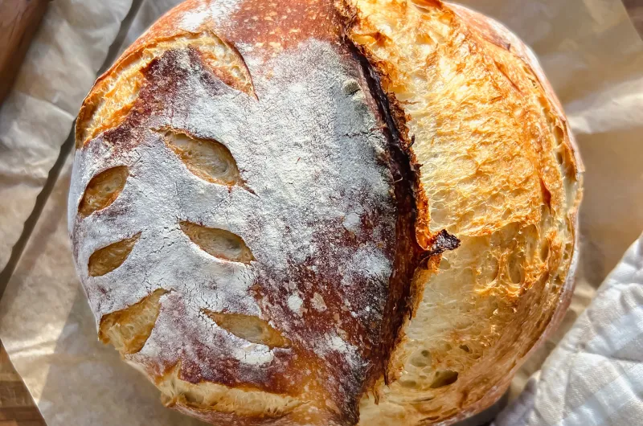

SOUR DOUGH BREAD

HOMEMADE ARTISAN SOURDOUGH LOAF
This homemade artisan sourdough loaf is probably one of the best recipes I’ve made. I retested this 9 times to make
sure it was perfect. I hope you love it as much as we do. Crusty on the outside and soft on the inside. This is the
base recipe and you can add all kinds of fillings! Have fun with it! I wanted to find what worked best for my
schedule and since I work from home, I like doing the majority throughout the day and then baking it the next
morning rather than starting at night. I’m too tired by night time these days haha! So hopefully this schedule works
well for you too!
Some benefits of sourdough bread
It’s easier to digest than most breads. The long fermentation breaks down a lot of the starches, which means it’s
already starting the digestion process for you. Also, it’s usually easier to digest even for those that are
sensitive to gluten.It’s filled with probiotics and amazing nutrients. It has probiotics and lactic acid from the
fermentation process.
The probiotics are good for your gut and the lactic acid also helps you to break it down and digest it.
It’s lower glycemic since it’s a fermented food. That means it doesn’t cause as much of a blood sugar spike when you
eat it.It feeds our family and is cheaper than bread at the store! It’s also made with simpler ingredients. Just
flour,
water, sourdough starter, and sea salt. You can’t beat that!We use it for lots of things like toast, sandwiches,
french toast, breadcrumbs, etc.
Ingredients
- 125 g sourdough starter (fed & active)
- 340 g water (set aside 10g for adding the salt)
- 500 g all-purpose flour
- 12 g sea salt
STEPS
Feed Starter:
- Feed your sourdough starter about 6-12 hours before you plan to use it. It's usually ready earlier in the summer
than winter. I always do equal parts so I'll typically have 50g of starter in my jar and feed it 50g of
all-purpose flour & 50g of filtered water. I usually feed mine the night before and then start the process in
the morning.
Mix Bread:
- In a large mixing bowl, add sourdough starter, 330g of water, and flour. Mix well until you get a shaggy ball.
I'll usually start mixing with my dough hook and then finishing mixing with my hands. Cover with a shower cap,
plastic wrap, or a damp dish towel for 1 hour.
- Add in the sea salt and remaining 10g of water. Mix it in with your hands to get it nice and incorporated. Mix
for about 3 minutes until you no longer feel the salt and you can form into more of a ball. Cover and let it
rest for an hour.
- After the hour is up, you're going to perform 3 sets of stretch of folds over about a 3 hour period. To start,
perform the 1st set of stretch and folds. Take one side of the dough and pull it up and fold it over itself.
Turn the bowl and do that on all 4 sides of the dough. Then cover and let it rest. You're going to do that again
after another 30 min-1 hour. Whatever works best for your schedule. After the second one, wait another 30 min- 1
hour and then do the last (3rd) set of stretch and folds. This helps build tension in the dough and will give it
a better rise. This step with take anywhere from 1.5 hours to 3 hours. In the summer, I'd do closer to 30
minutes and in the winter I usually like to let it go closer to an hour. Both work!
Bulk Rise:
- Next, you'll cover the bowl and leave the bread on the counter for it's bulk rise! I'd let it rise anywhere from
3-5 hours until it's risen a bit (it won't double) and it has bubbles forming in the bottom of the bowl.
To Form a Ball
- Next, dump your dough onto a floured surface. Gently form into a ball and let rest 20 minutes.
- Once it's rested, press your dough gently into a rectangle. Then you're going to fold your dough over one side
and then fold the other side overtop of it so it looks like a long rectangle. Then take your dough and roll it
over itself so it's a cylinder.
- Then you're going to push the dough away from you and pull it back, which creates tension in the dough. This
will gently form the dough into a ball. Do this about 15-20 times until it's a nice ball.
- Then you're going to use a bench scraper to lift your dough ball and place it upside down in a floured banneton.
(Or you can also use a bowl with a tea towel.)
- Pinch the dough on the bottom to make sure it's tight. Cover your banneton and place it in the fridge to slowly
rise for 12-24 hours.
Bake:
- When you're ready to bake your bread, preheat your oven to 500F degrees with your dutch oven in there.
- Once it's preheated, dump your dough out onto a piece of parchment paper. Score the top of your bread. Pick up
your dough by grabbing the sides of the parchment paper and place it into the hot dutch oven. Cover the dutch
oven.
- Turn the heat down to 450F degrees. Bake your bread covered for 20 minutes. Then uncover the top and cook for an
additional 20-25 minutes until your bread reaches 200F degrees internally. Let rest 1 hour before slicing into
your bread so it doesn't get a gummy texture. Enjoy!!